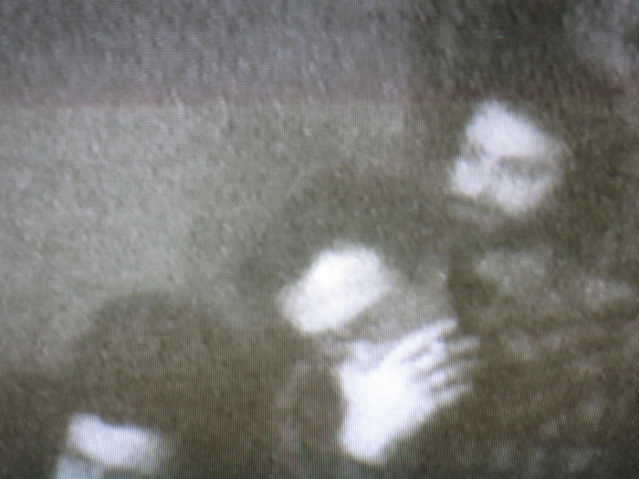
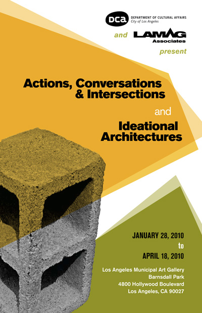
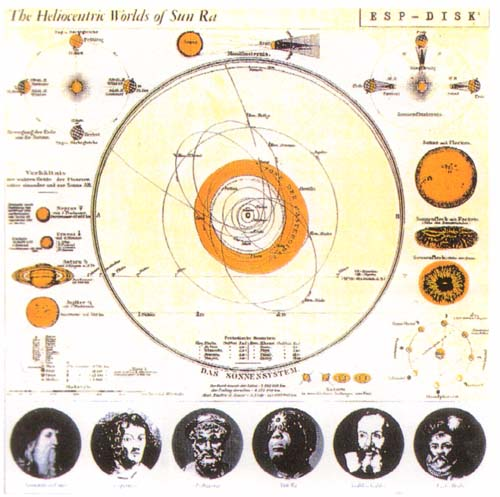
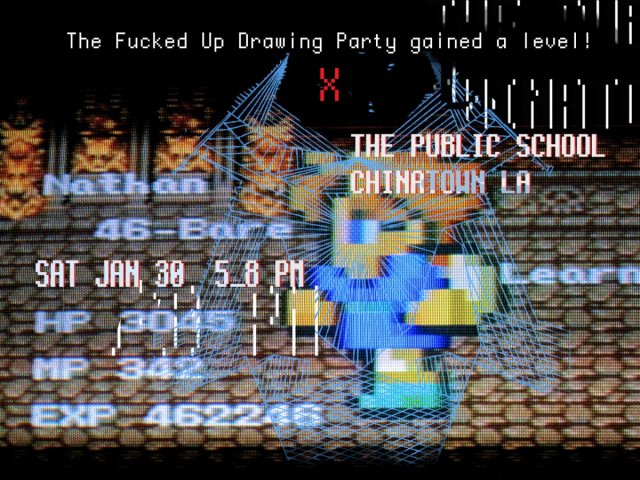
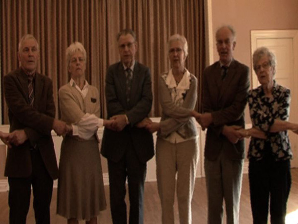
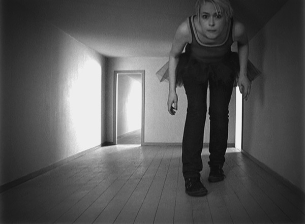

Telic Arts Exchange
951 Chung King Road
Los Angeles, CA 90012
[map]


Facs of Life screening on Sunday, February 21
On Sunday, February 21, we are lucky to have Silvia Maglioni and Graeme Thomson visiting us from Paris to screen their 2009 film, Facs of Life. The screening will begin at 7pm, but we invite you to come earlier for a conversation with Silvia and Graeme.

Facs of Life departs from Gilles Deleuze's Vicennes seminar of 1975-1976 and follows several individuals who participated there as students. In the words of the filmmakers, it "is a film of conceptual/poetic dispositifs that charts trajectories of those affected by Gilles Deleuze’s laboratory of machinic thought at the Centre Expérimental Universitaire de Paris 8 – Vincennes (1969-1980). The film generates its lignes d’erre and its cinematographic territories from a series of encounters: with videos of Deleuze’s courses at Vincennes made by a group of militant cineastes; with several of those who attended the seminar and who appear in these images; with the woods of Vincennes where the university buildings (pulled down in 1980) once stood; with students of the new Paris 8 university at St Denis; and inevitably with the phantoms of revolution that continue to haunt our desires."
A trailer can be found here:
Ambivalence as part of "Actions, Conversations, Intersections"
The Public School is a part of Actions, Conversations, Intersections, "an exhibition of participatory projects" at the Los Angeles Municipal Art Gallery, which runs from January 24 - April 18, 2010. Our involvement begins this Sunday, February 7th at 3pm, so we hope you'll come out!
about:
Our course on "ambivalence" will be meeting simultaneously in two places - the Municipal Art Gallery (the site of the Actions, Conversations, and Intersections exhibition) and Telic Arts Exchange (where The Public School regularly holds classes). Each group will be able to see and hear the other through a commonplace video conference call (Skype, iChat, etc.). Teachers, speakers, and other guest presenters will go to whichever location seems more appealing that day and no one will be informed of their decision until the last minute.
We often wonder what happens when participatory art projects are brought into the gallery, particularly when they already regularly function without an exhibition space. This question is amplified when the project and exhibition are in the same city. Does the project migrate to the exhibition, leaving its "normal" site closed? Does it announce itself as nomadic, settling temporarily in exhibition space after residency after biennial? Does it produce an exhibitable double of itself to accommodate the requirements of the gallery? Does it refuse any mutation or compromise in order to preserve its singular authenticity?
ambivalence:
This course will (maybe) explore different concepts and theories of ambivalence, typically defined as "simultaneous and contradictory attitudes or feelings (as attraction and repulsion) toward an object, person, or action;" "continual fluctuation (as between one thing and its opposite);" and "uncertainty as to which approach to follow."
In addition to researching and reading what various contemporary thinkers have to say about ambivalence, we will also attempt to debate the relative pros and cons of ambivalence as a state/position/strategy. What is dangerous, or, alternately, enchanting, about ambivalence? How might we theorize an ethics of uncertainty?
Readings will include excerpts from USC professor Karen Pinkus' new book on alchemy and ambivalence, as well as selections from psychoanalytic, queer, trans and other works relevant to the topic. Suggestions encouraged!
This class will be led by Sarah Kessler and others.
the first class:
- How might we define ambivalence (what does ambivalence seem to signify)?
- Is ambivalence an affect? An intellectual state? An ambiance? A process?
- In what ways is ambivalence represented?
Reading: Karen Pinkus, “Excursus: Ambivalence,” from Alchemical Mercury: A Theory of Ambivalence. Possible second reading: Judith Butler, "Ethical Ambivalence," in The Turn to Ethics.
Also: Please, if you like, bring various definitions/representations of ambivalence to class (textual excerpts, images, video clips, etc.) for group discussion.

Tonight! The Last of my Time Makes a Cosmos: Rhythm and Space Analysis toward the de-gentrification of the Black Avant Garde
Nonstophome will be in residence at The Public School for the next week (beginning tonight at 7pm!) with their four-day listening, reading, and discussion-based seminar, The Last of my Time Makes a Cosmos: Rhythm and Space Analysis toward the de-gentrification of the Black Avant Garde. The class description is below, but a practical note: if you can't make it to the first meeting, feel free to come to the second class, on Thursday.

original class proposal:
In this class we will explore the poems and music of Sun Ra, Rahsaan Roland Kirk, Dorothy Ashby, George Russell, Julius Eastman, Ornette Coleman, Gene Toomer, MF Doom, Madlib, Gil Scott Heron, Andrew Hill, Eluard Glissant, Kamau Braithwaite, Alice Coltrane etcetera. We will listen to a lot of music in the classroom in addition to looking at texts and liner notes, and we will map the gentrification and eviction of black artists from the avant garde. We will explore how the use of mythos serves as a shock absorber for this eviction and how the landless back avant-garde has gone on to occupy and dominate the cosmos, inventing and reifying an afro-futurist sensibility and a kinetic indifference to the places from where they have been excluded. We will try to re-map a solidarity between the two vanguards, one not based on otherness but aware of the stalemate in place. We will learn how to live sustainably in the afro-future and we will ask ourselves if any room remains for black artists alongside their western counterparts or if both have come rely upon the stagnant echo between them, and more importantly, why would anyone want to leave the Cosmos/home. Is the black avant garde at home in space.
FUDP X on Saturday
Hello!
We are hosting the tenth Fucked Up Drawing Party on Saturday evening, between 5 and 8pm. It will be guided, as usual, by Nathan Danilowicz and Daniel Gaines. Drawings from the party will be on exhibit at our space for the next week or so.
MANIFESTO:
The purpose of a Fucked Up Drawing Party is to get fucked up (i.e. intoxicated) and draw things that are fucked up (i.e. disturbing). What constitutes a Fucked Up Drawing is different for everyone. Some people discover the Fucked Up in aberrant sexuality or perverse violence, for others it may be politically charged. Styles range from abstract mark making to soft-core realism- being eccentrically overt or delicately subtle. The ultimate test is that when you look at a drawing, you think to yourself, "that's fucked up."
Fucked Up Drawing Parties are for everyone, including "non-artists." No one is pressured to make a "good" drawing in the conventional sense, meaning: perspective, accurate anatomy, composition, chiaroscuro, crosshatching.. such skills are not required. Collaboration is encouraged, especially between "artists" and "non-artists." The resulting collective momentum ensures that each individual has a network of creative support. With this momentum, Fucked Up Drawing Parties can happen anywhere.. the alley, the foyer, or Texarkana. And while these events are considered "parties," production of drawings is essential.. and of course getting fucked up.
Ideally, the Fucked Up Drawing Parties create a space where all types of people can gather and feel free to indulge their deepest, darkest, most inappropriate fantasies with out fear of castigation. This creation of abject imagery, and our exposure to it, disrupts the hegemonic flow of mass media. The affects of a Fucked Up Drawing Party can be seen in the residue of drawing and inebriation the morning after. To exit a Fucked Up Drawing Party is to embark on a walk, not of shame, but of revitalization towards your freshly fucked up life.

Johanne Løgstrup - the first Distributed Gallery exhibition of 2010
Johanne Løgstrup, a curator based in Copenhagen, has selected the videos that are installed in the Distributed Gallery for the months of January and February. This show - which features the artists Rikke Benborg (at Fong's), Vladimir Tomic (at Via Cafe), Cecilia Westerberg (at Ooga Booga), and Jette Ellgaard (at The Public School) - has neither a title nor a comprehensive statement, so you are invited to come to our space at 951 Chung King Road, where we have a guide with the video locations and the descriptions of each of the pieces.
For more information, see http://dg.telic.info/johanne-logstrup.html

Jette Ellgaard, Forsamlingshus/Village hall, 2009, 3 min.

Rikke Benborg, It's a poor sort of memory that only works backwards, 2008, 10 min.

Vladimir Tomic, Trilogy, 2004, 4 min., 7 min. and 8 min.

Cecilia Westerberg, Cry me a river, 2007, 4 min.